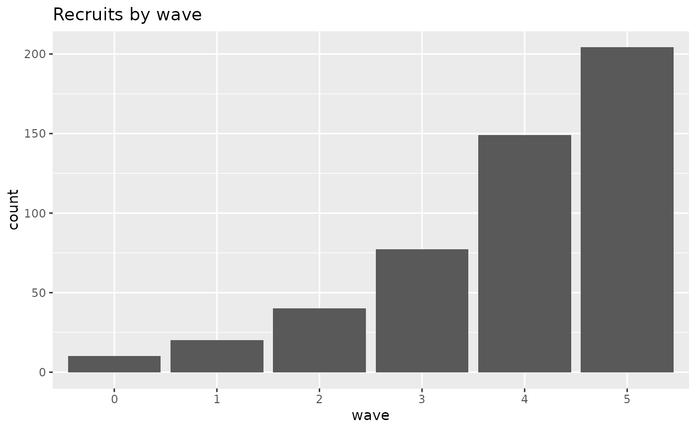
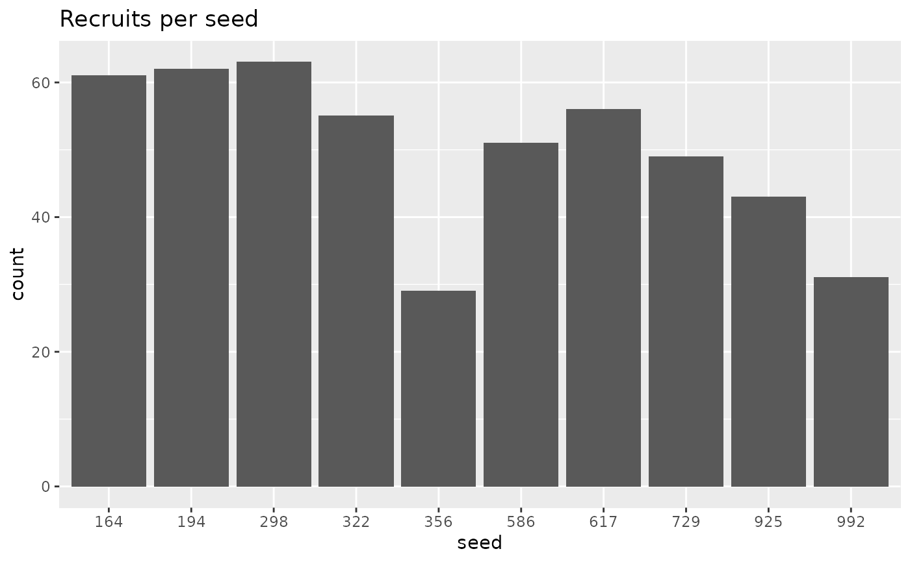
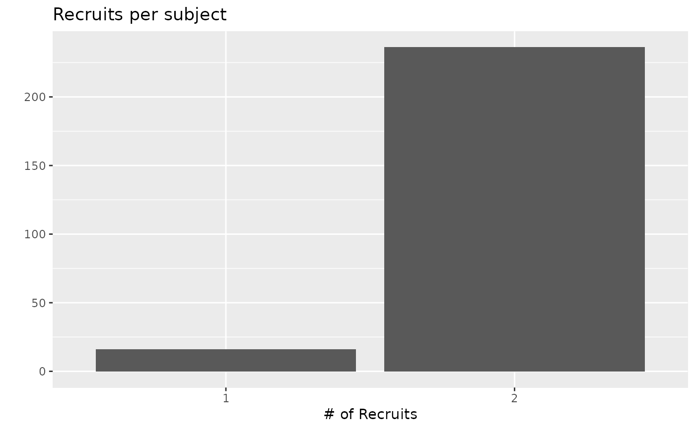
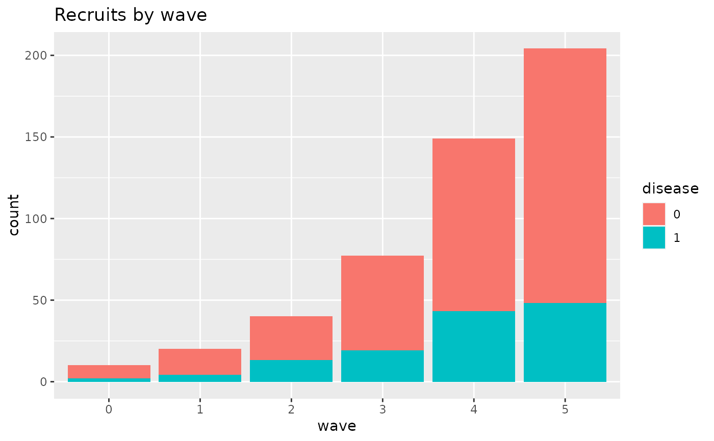
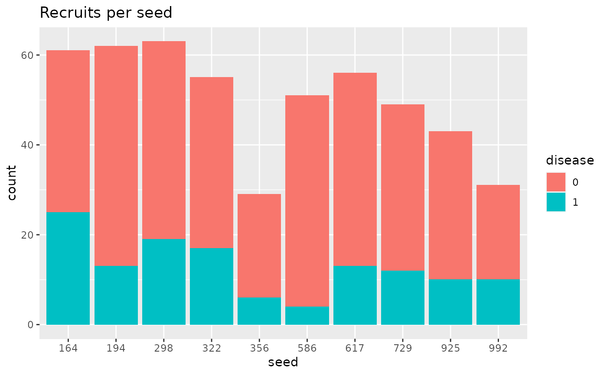
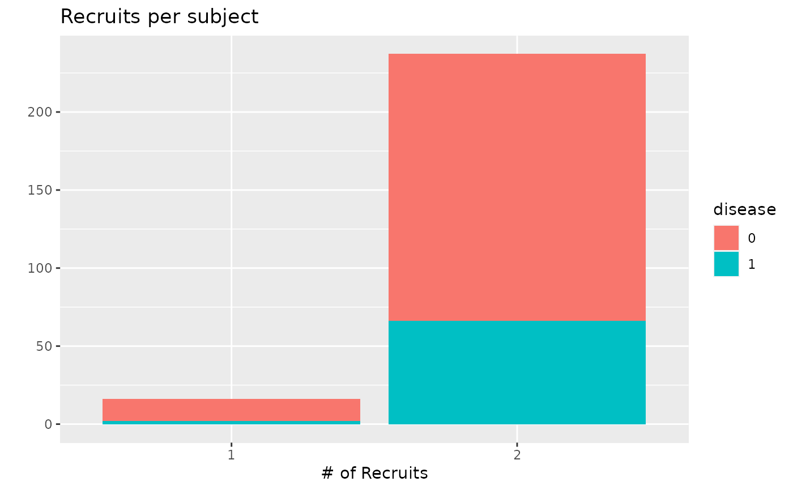

plot.rds.data.frame.RdDiagnostic plots for the RDS recruitment process
# S3 method for rds.data.frame plot( x, plot.type = c("Recruitment tree", "Network size by wave", "Recruits by wave", "Recruits per seed", "Recruits per subject"), stratify.by = NULL, ... )
| x | An rds.data.frame object. |
|---|---|
| plot.type | the type of diagnostic. |
| stratify.by | A factor used to color or stratify the plot elements. |
| ... | Additional arguments for the underlying plot function if applicable. |
Either nothing (for the recruitment tree plot), or a ggplot2 object.
Several types of diagnostics are supported by the plot.type argument. 'Recruitment tree' displays a network plot of the RDS recruitment process. 'Network size by wave' monitors systematic changes is network size based on how far subjects are from the seed 'Recruits by wave' displays counts of subjects based on how far they rare from their seed. 'Recruit per seed' shows the total tree size for each seed. 'Recruits per subject' shows counts of how many subjects are recruited by each subject who are non-terminal.
